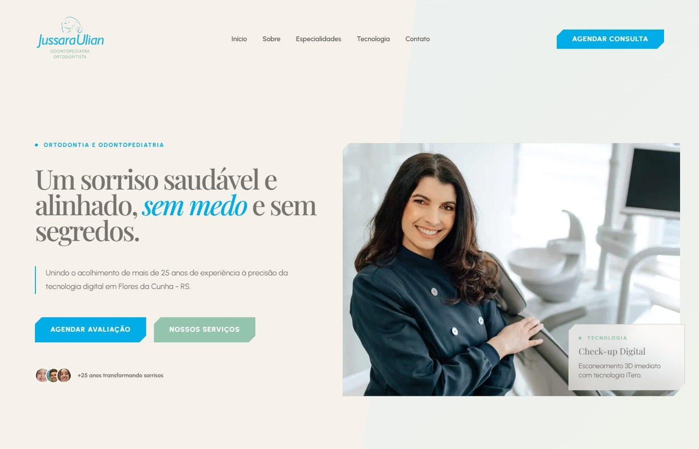

Início
01
Primeira dobra com posicionamento, promessa e ação.
A abertura apresenta a área de atuação, a frase principal do site, a imagem da profissional e dois caminhos imediatos: agendar avaliação ou conhecer os serviços.